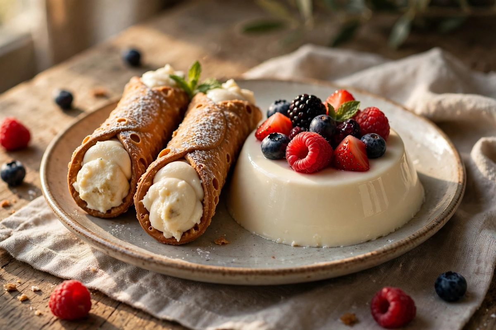

Home › Guides
Italian Desserts: Tiramisu, Panna Cotta, Gelato and More

Italian desserts are famous for a reason. They are rarely fussy, they use few ingredients, and they rely on quality rather than decoration. A good tiramisu needs good coffee and good mascarpone. A good panna cotta needs good cream and a gentle hand. Learn the classics and you will never need a bakery again.
Tiramisu
Tiramisu means pick me up, and it is coffee, mascarpone, eggs and savoiardi biscuits layered and chilled. Whisk egg yolks with sugar until pale, fold in mascarpone, then fold in softly whipped egg whites or cream. Dip each biscuit briefly in strong, cooled coffee, never soak it, or the dessert turns soggy.
Layer biscuits and cream in a dish, chill for at least four hours, and dust with cocoa just before serving. Use pasteurised eggs or a cooked-egg version if you are serving children, pregnant guests or older people. Tiramisu tastes better the next day, once the flavours have settled.
Panna cotta
Panna cotta is cream, sugar and vanilla set with gelatine. Heat the cream gently with sugar and vanilla until the sugar dissolves, then stir in gelatine that has been softened in cold water. Pour into moulds and chill for at least four hours.
The texture should be a soft set that wobbles when shaken, not a firm jelly. Too much gelatine is the usual mistake. Serve with fresh berries, a fruit coulis, or a spoonful of honey. Panna cotta is naturally gluten-free and easy to make ahead for guests.
Gelato and granita
Gelato is churned more slowly than ice cream and served warmer, so it tastes denser and more intense. You can make a simple version at home with a basic custard of milk, cream, sugar and egg yolks, churned in an ice cream maker and frozen.
Without a machine, try granita, the Sicilian iced dessert. Mix coffee or fruit juice with sugar, freeze it in a shallow tray, and scrape it with a fork every half hour until it forms crystals. Serve granita with whipped cream and a brioche for the Sicilian breakfast.
Cannoli and zabaglione
Cannoli are crisp pastry tubes filled with sweetened ricotta. The shells are fried until crisp and should be filled just before serving, or they go soft. Drain the ricotta overnight so the filling is thick, sweeten lightly, and add chocolate chips or candied peel.
Zabaglione is a warm, foamy dessert of egg yolks, sugar and Marsala wine, whisked over gentle heat until thick. Serve it warm over fresh fruit or on its own in a glass. It takes ten minutes and uses only three ingredients, which makes it the fastest impressive dessert in Italian cooking.
Serving Italian desserts
Italian desserts are usually served after the meal with coffee, not as a grand finale. Keep portions modest and let the flavours speak. A small slice of crostata with coffee is more Italian than a towering cake.
Make desserts ahead where you can. Tiramisu and panna cotta both improve with a night in the fridge, which leaves you free to enjoy the meal. Keep the presentation simple: a dusting of cocoa, a few berries, a glass dish.
Frequently Asked Questions
How long does tiramisu need to chill?
At least 4 hours, and overnight is better. The biscuits soften and the flavours settle, so it slices cleanly.
Why is my panna cotta rubbery?
Too much gelatine, or the cream was boiled. Use the amount in the recipe, soften gelatine in cold water, and heat the cream gently.
Can I make cannoli ahead of time?
Make the shells ahead and keep them crisp in a sealed container. Fill them just before serving so they stay crunchy.